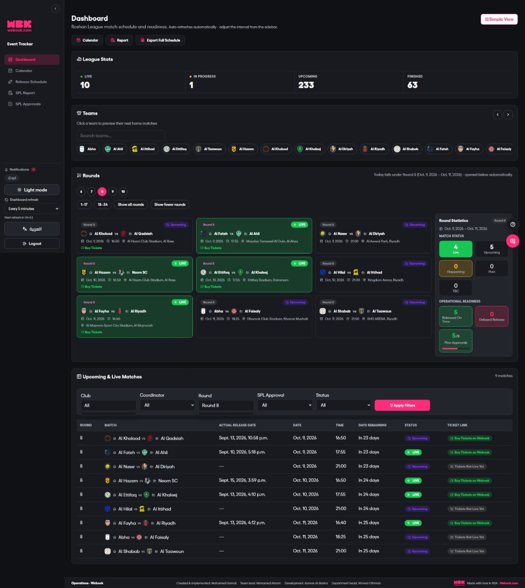
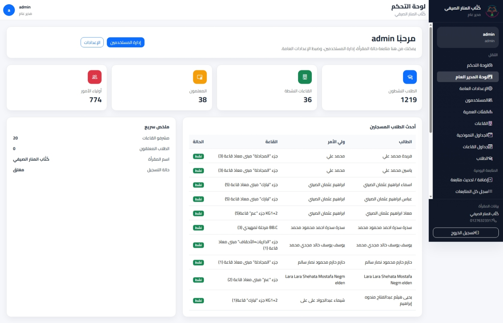
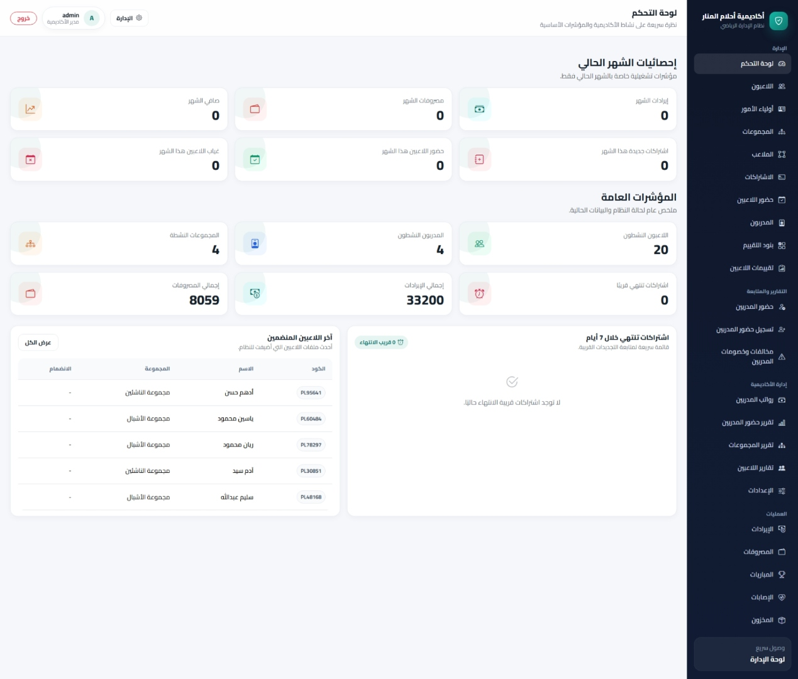
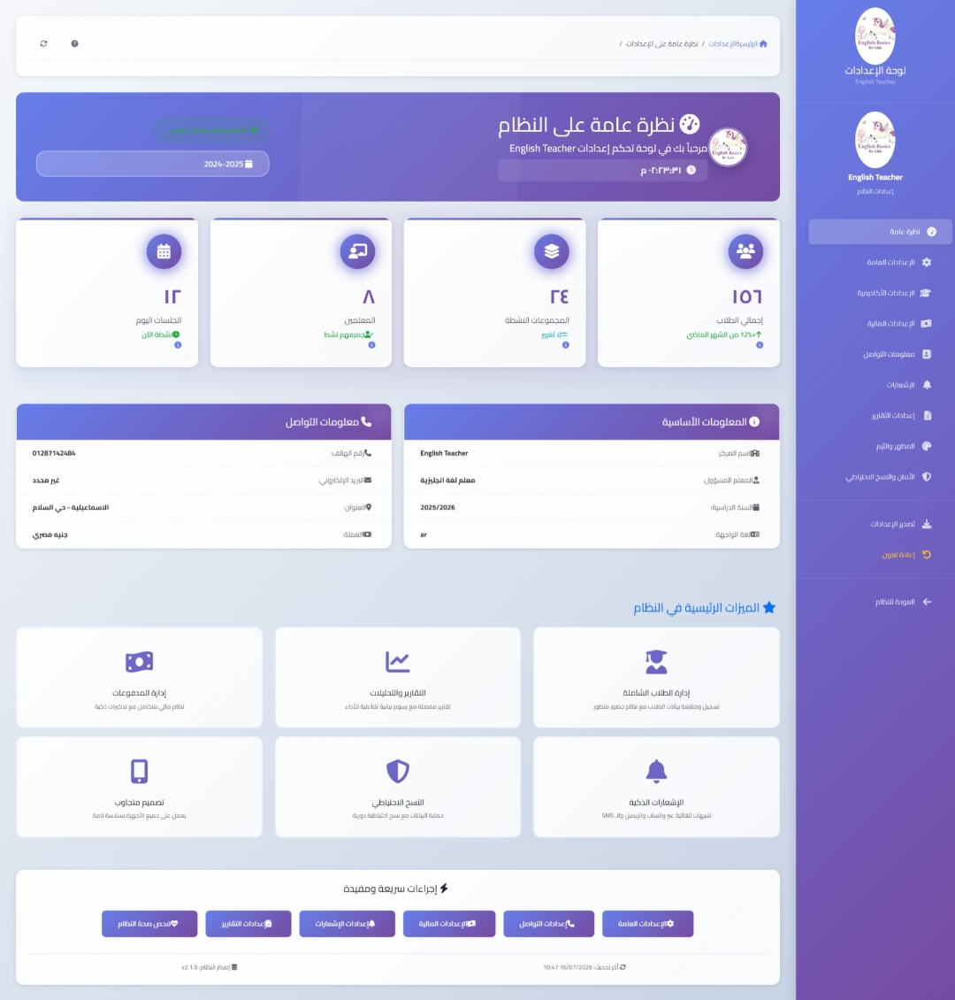
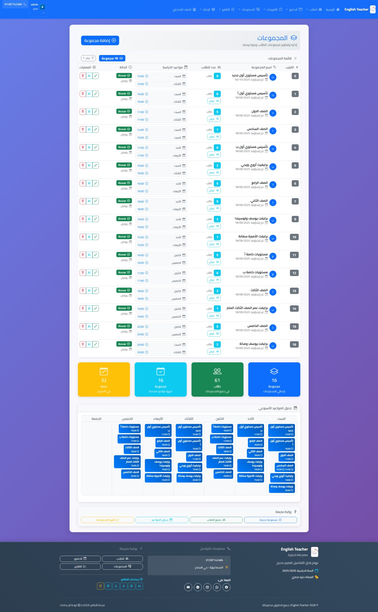
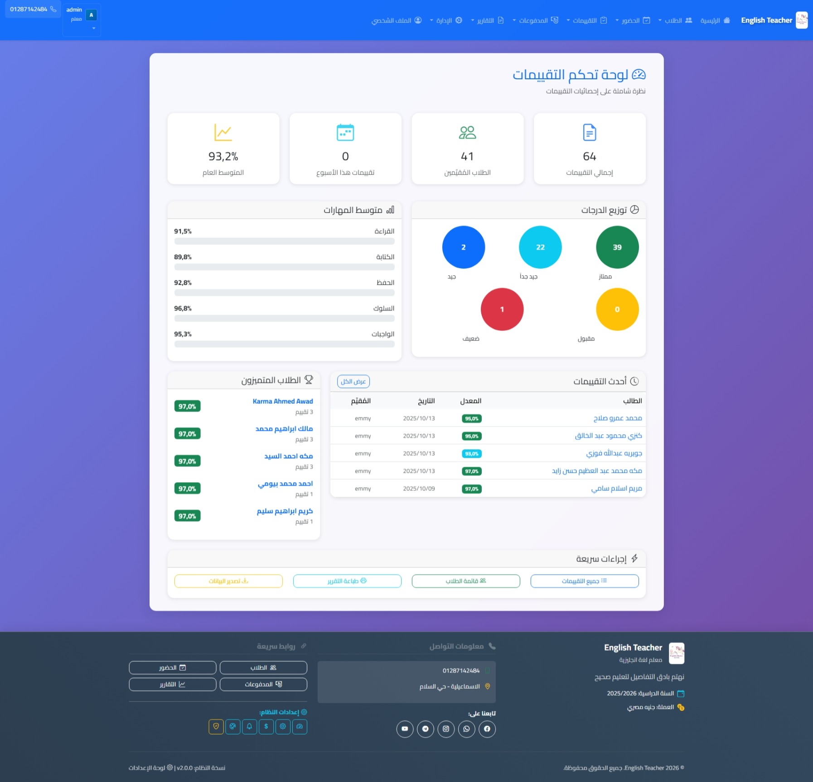
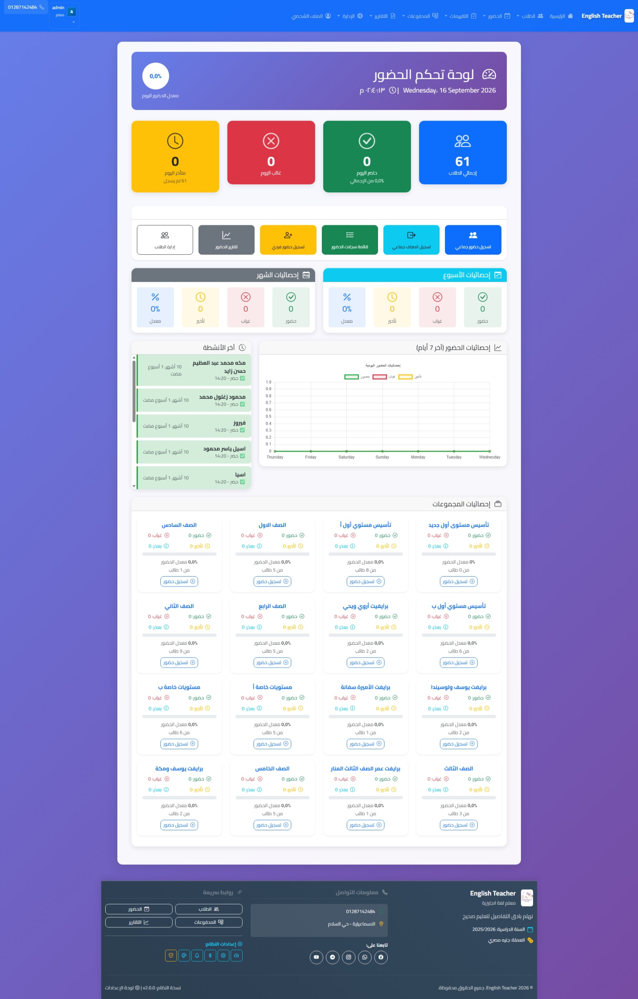

Web developer · systems administrator · account manager
I build practical systems and manage real-world operations.
I'm Mohamed Gamal Mansour, a web developer and IT specialist with 15+ years of experience. I currently work part-time at Webook as an Account Manager for clubs participating in the Roshn Saudi League.
Current role
Account Manager for Roshn Saudi League clubs at Webook.
01 — Professional documents
Download my CV and portfolio.
Get a concise overview of my experience or explore selected projects in detail.
Project Portfolio
Selected systems, project stories, interfaces, and implementation experience.
02 — About me
Technology, operations, and a practical mindset.
My experience combines hands-on IT operations with web development, account management, and product thinking. I analyze workflows, organize data, support stakeholders, and turn recurring manual tasks into clear, maintainable digital systems.
I have worked across football operations, education, event operations, healthcare, business management, training, networks, technical support, design, programming, and AI-assisted development.
03 — Selected work
Systems designed around people and workflows.
Operations platform
Webook Tracking System
A focused internal system for tracking operational tasks, updates, statuses, and team follow-up in a structured workflow.
Education management
Quran Recitation Academy System
A management platform for organizing students, teachers, حلقات, attendance, recitation progress, and reports.
Healthcare
Medical Clinic Management
A Django-based system for patient records, diagnoses, electronic prescriptions, and organized clinic operations.
Education
Student Results & Certificates
A student results platform with automated certificate generation to make results easier to access and manage.
04 — Project galleries
Real interfaces from selected systems.
Webook Match Tracker


Quran Recitation Academy System





Al-Manar Football Academy ERP



Administrative System Interface



05 — Experience
A background built across technology, football, and service.
Account Manager – Roshn Saudi League Clubs · Webook · Part-time
Manage communication, coordination, follow-up, and operational requirements for football clubs participating in the Roshn Saudi League.
Technical Support Supervisor · Riyadh Season / Webook
Supervised technical support operations and coordinated ticket-booking support during a high-volume event environment.
System Administrator & IT Trainer · Al-Manar Language School
Managed systems, networks, technical support, training, website maintenance, and digital content for the American Section.
06 — Training & continuous learning
A broad technical foundation, continuously updated.
I have completed many training courses across different technology fields, including computer maintenance, networks, graphic design, web development, programming languages, and most recently artificial intelligence.
07 — Toolkit
Tools I use to turn ideas into working systems.
08 — Contact
Have a system or an idea in mind?
Let's discuss how technology can make your workflow clearer and more efficient.
mohamed.gamal.m@gmail.com